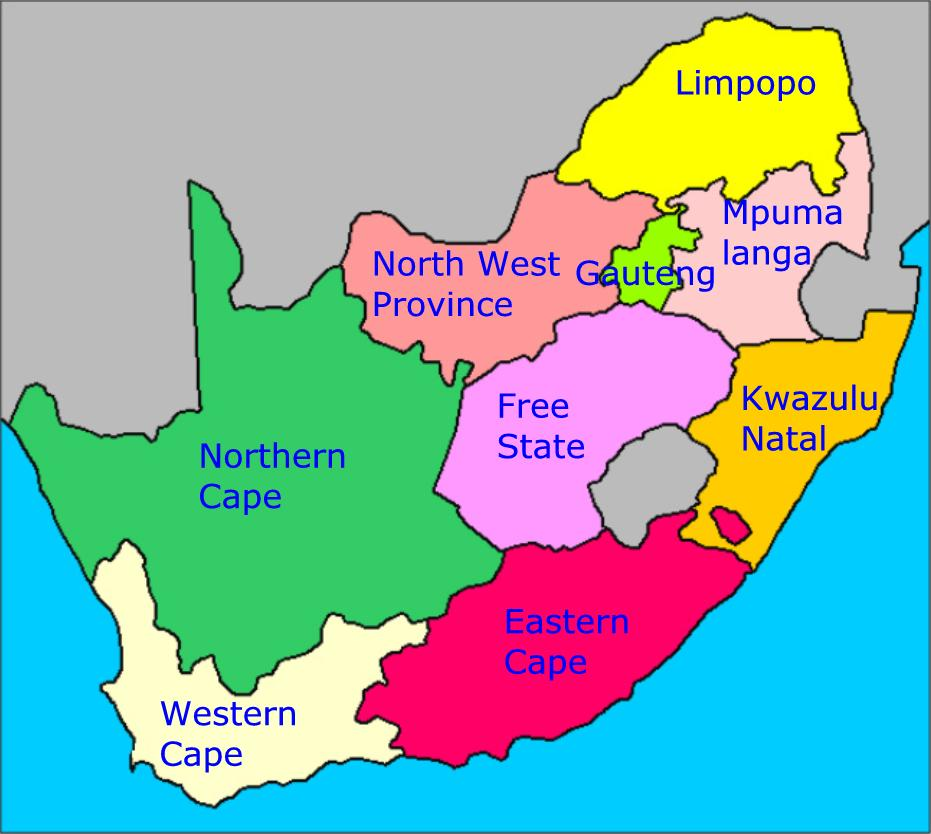
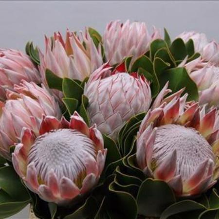
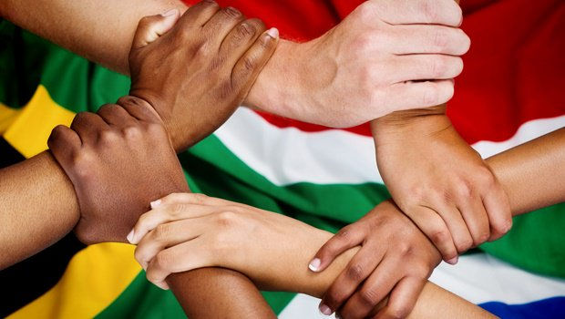
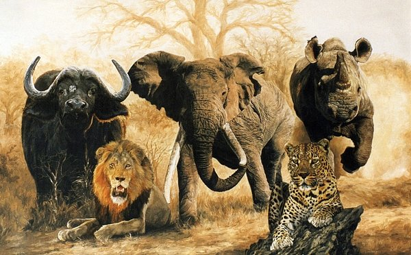
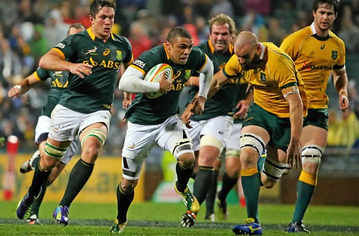
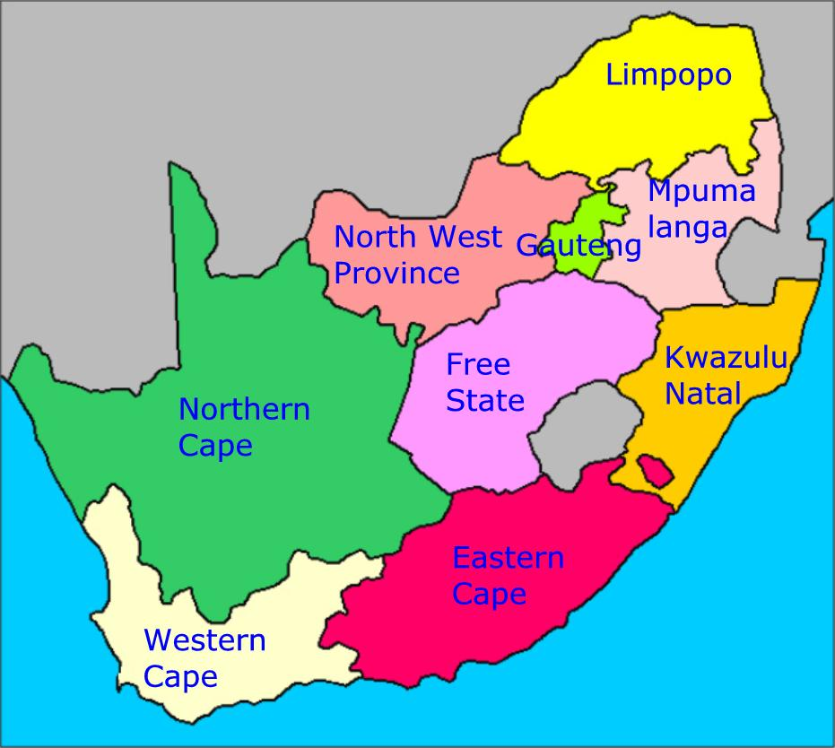
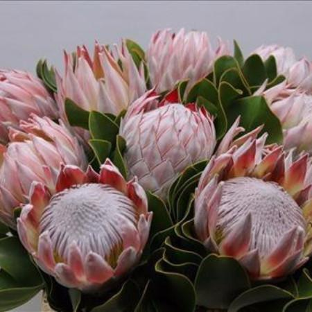
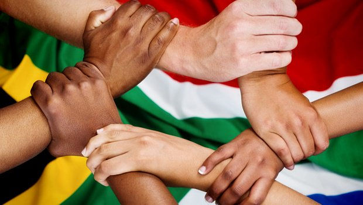
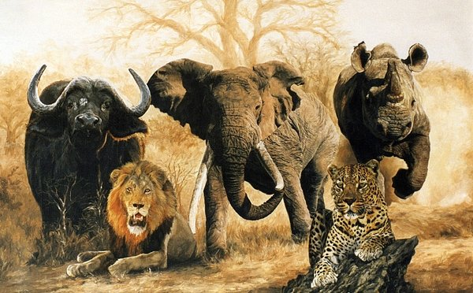
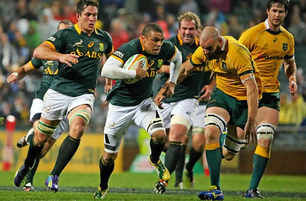

South Africa, like any other country has history to share, this beautiful country had experienced a tradgic odeal of segregation from the 1800s that divided racial groups(aparthied). This not only lead to the deaths of innocent youngsters such as Hector Pieterson and Solomon Mahlangu, but also created inequality, violation of human rights and dignity towards certain racial groups of South Africa by the aparthied gorvernment. This country had a lot of leaders fighting againts the apartheid government; amongst them was the late Rolihlahla Nelson Mandela who was jailed for 27 years in Roben Island Prison. Nelson Mandela was then released in the early 90s, South Africa than voted and won by the African Congress Party (ANC) its first democratic elections 1994 and today is celebrating 25 years of freedom! Furthermore, this country shares its beauty and the spirit of ubuntu(humanity) together united not only with its residences but invites people from around the world to experience and learn about its history. Browse through the webpage to learn about 5 of the 9 provices of South Africa.
| PROVINCE | POPULATION |
| KwaZulu-Natal | 10,27 million |
| Gauteng | 12,27 million |
| Western Cape | 5,823 million |
| Mpumalanga | 4,04 million |
| Eastern Cape | 6,562 million |